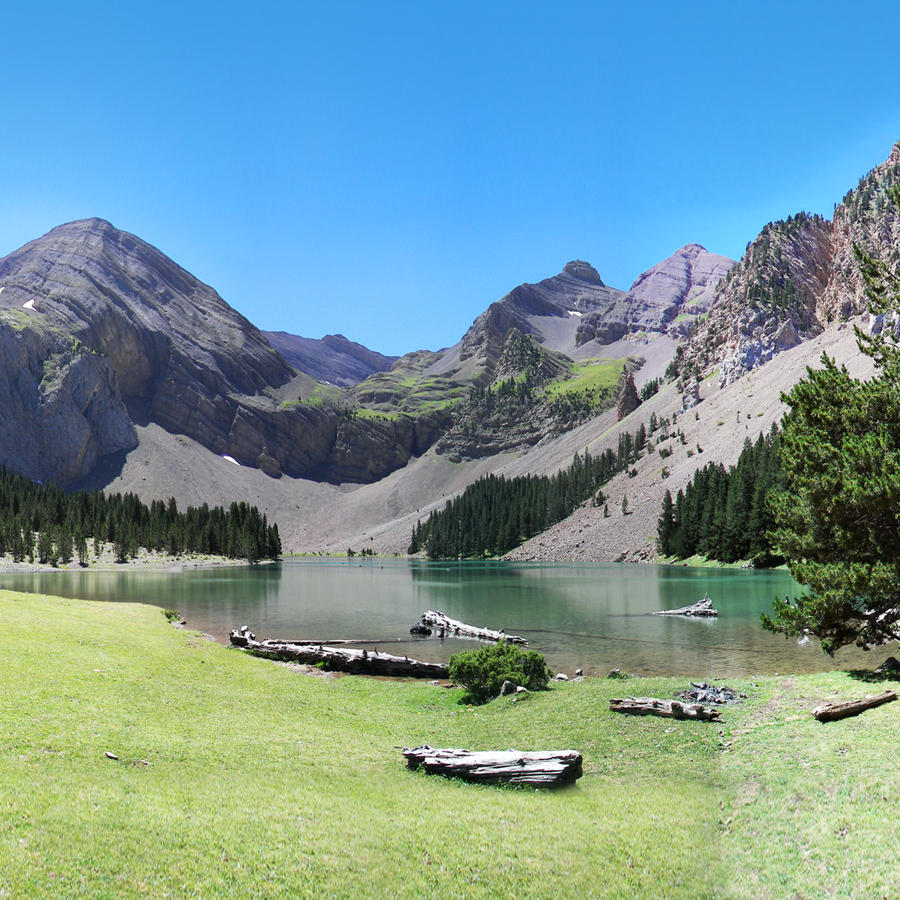

Ruta al Ibón de Plan - Basa de la Mora
Una excursión para descubrir uno de los ibones más conocidos del Pirineo aragonés, rodeado de bosques y grandes montañas.

Información de la ruta
- Ubicación: Valle de Chistau, Huesca
- Inicio: Refugio de Lavasar
- Distancia: 3-4 km aproximadamente (ida y vuelta)
- Duración: Entre 1 y 2 horas
- Dificultad: Fácil en buenas condiciones
- Tipo: Ida y vuelta
Descripción del recorrido
El Ibón de Plan, también conocido como Basa de la Mora, se encuentra en el Pirineo aragonés, en un entorno rodeado de bosques y montañas.
Una de las formas más sencillas de llegar es comenzar la excursión desde el refugio de Lavasar. Desde este punto seguimos un sendero que atraviesa zonas de bosque y praderas de montaña.
El recorrido es relativamente corto y no tiene grandes desniveles, aunque podemos encontrar zonas con piedras, barro o raíces dependiendo del tiempo.
Al llegar al ibón nos encontramos con un paisaje muy característico, con el lago situado al pie de grandes montañas. Es un buen lugar para descansar, hacer fotografías y disfrutar de la tranquilidad del entorno.
Qué hace especial esta ruta
Lo más llamativo de esta excursión es el paisaje que rodea al lago. La combinación del agua, los bosques y las montañas convierte este lugar en uno de los rincones más bonitos de la zona.
Además, existe una leyenda popular sobre una princesa mora relacionada con el ibón, de la que procede el nombre de Basa de la Mora.
Consejos para la excursión
Aunque la caminata desde Lavasar es relativamente sencilla, es importante llevar calzado adecuado, agua y ropa adaptada a las condiciones meteorológicas.
También hay que tener en cuenta que el acceso al refugio de Lavasar se realiza por una pista de montaña cuyo estado puede variar. Es recomendable consultar las condiciones y posibles restricciones antes de organizar la excursión.
Como en cualquier espacio natural, debemos respetar el entorno, no dejar basura y evitar molestar a los animales.
← Volver a las rutas